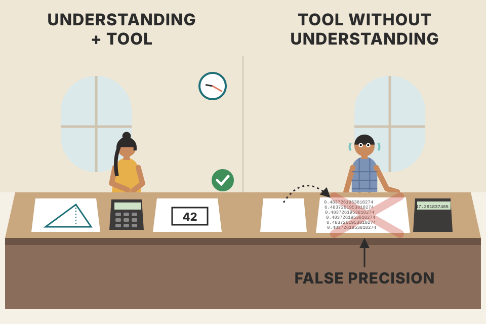
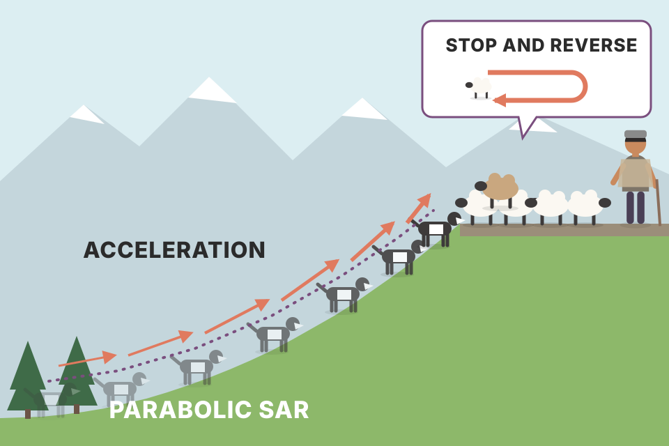
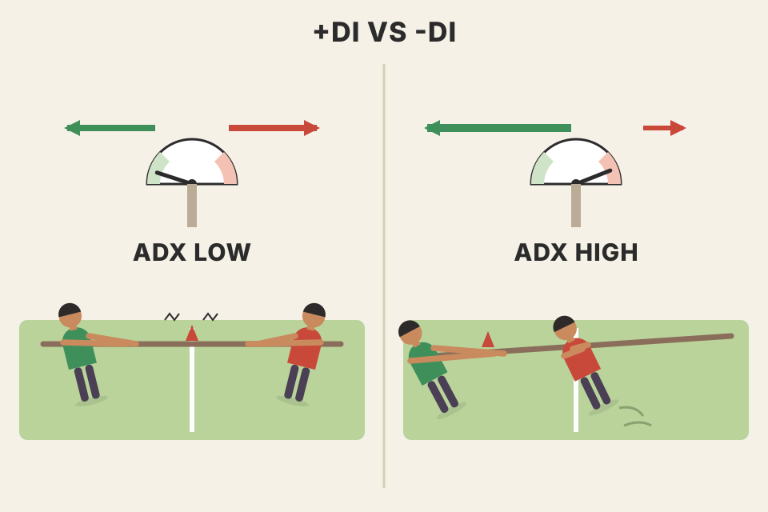
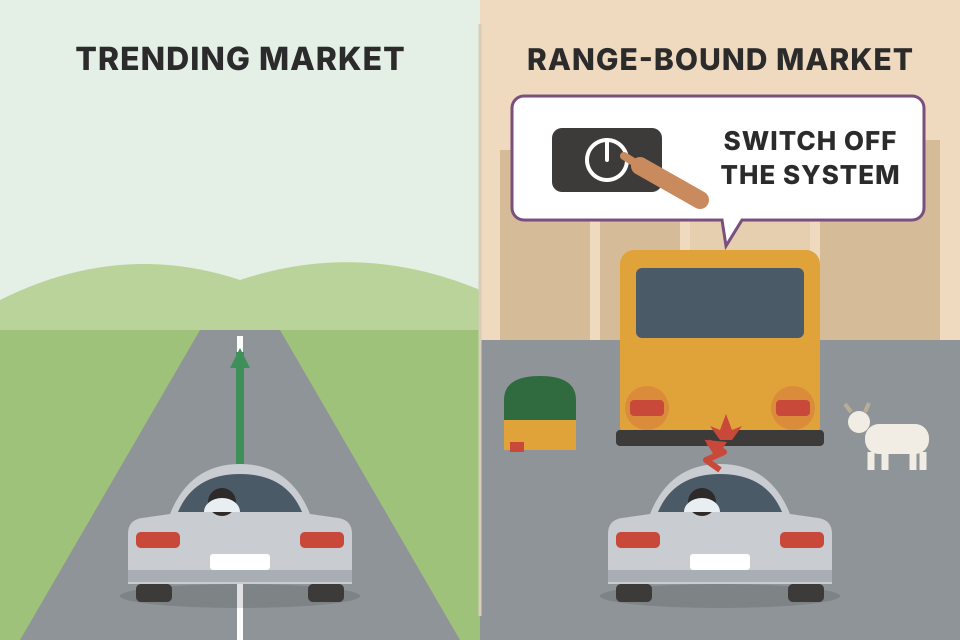

Murphy's chapter on what a computer adds to chart reading, and on Welles Wilder's two famous mechanical systems: the Parabolic SAR and Directional Movement (DMI/ADX). Both systems are built live below from a simulated market, so you can watch why a trend system shines in trends, bleeds in sideways markets, and how ADX tries to tell the two apart. Every price on this page is simulated. Press the button to roll a new market.
Murphy's argument runs in one line: the computer is a tool, not a teacher; it lets you run mechanical systems, but those systems are trend followers, so you need a way to know when not to trust them.
Computers give the technical trader quick access to a whole arsenal of tools and studies that, only a few years earlier, would have taken an enormous amount of work to produce. Murphy immediately adds the catch: this only helps if you already know how to use those tools.

A calculator in an exam. If you understand the problem, it saves you an hour. If you don't, it just helps you reach a wrong answer faster, and with more decimal places, which makes it feel more right than it is.
Notes/trading/backtest_results_summary.md). The speed came from the computer; the judgement to test before trading came from you.Many routines in charting software are the tools already covered in earlier chapters. Beyond those, Murphy points to extra features: the ability to automate the functions the user picks, and above all the ability to test studies for profitability, which he says may be the program's most valuable feature. Some software even lets a person with little or no programming background build their own indicators and systems.
He then previews the core of the chapter: two of J. Welles Wilder's popular systems, the Directional Movement System and the Parabolic System. He uses them to show three things:
"Test for profitability" is the step that turns an indicator into a system: an indicator only draws a line; a system adds exact entry and exit rules, so a computer can replay them over past data and count the result. Sections 07–09 do exactly that on simulated data.
Has the computer made life simpler, or just given us more to look at? Murphy notes that charting packages offer 80 different studies. With that much data, how does anyone reach a conclusion, and still find time to trade? He promises a few words on work being done in that direction (the answer comes in sections 06 and 12).
A restaurant menu with 80 dishes. The regulars don't read it; they order the two things they know are good. A menu that big mostly makes newcomers anxious.
Most of those 80 studies are rearrangements of the same few inputs: open, high, low, close, volume. RSI, stochastics, %R and rate of change all re-express recent price change in slightly different ways. Adding a second or third one mostly repeats the first one's opinion; it doesn't add a new witness.
Correlation between each pair, over the bars where all five exist (1 = they always move together, 0 = unrelated). Darker cells = more repetition. Roll a new market at the top and the numbers barely move.
Williams %R and the raw stochastic %K are the same formula: both ask where today's close sits inside the last 14 bars' high-low range, one counted from the bottom, one from the top. %R is exactly %K − 100, so their correlation is 1.00 and the dashed line sits on the amber one. RSI, CCI and rate of change measure "how far has price moved lately" in three different units, so they agree most of the time (pairwise roughly 0.75 to 0.95 here; stochastic and CCI, which both measure the close against a recent 14-bar window, about 0.95). Five oscillators on screen give you far fewer independent opinions than five. (Simulated prices; on real data the exact numbers differ, but %R = %K − 100 is algebra and holds everywhere.) That is the engineering reason behind Murphy's advice in section 06 to pick one or two.
backtest_results_summary.md). The shopping list changed; the idea (software + clean history + daily updates) did not.Murphy groups the chart and indicator options of a typical package. Almost every item is a tool from an earlier chapter; the right-hand column shows where.
| Group | Items in Murphy's list | Covered in |
|---|---|---|
| Basic charts | bar, line, point & figure, candlesticks | Ch.3 · Ch.11 · Ch.12 |
| Chart scales | arithmetic, semilogarithmic | Ch.3 |
| Bar chart | price, volume, open interest (futures) | Ch.3 · Ch.7 |
| Volume | bars, on-balance volume, Demand Index | Ch.7 (Demand Index: Murphy's Appendix A, pdf p516, an early volume indicator by James Sibbett; not the DI lines of section 08) |
| Basic tools | trendlines & channels, percentage retracements, moving averages, oscillators | Ch.4 · Ch.9 · Ch.10 |
| Moving averages | reference envelopes, Bollinger Bands | Ch.9 §9 (envelopes) · §10 (Bollinger) |
| Oscillators | CCI, momentum, rate of change, MACD, stochastic, Williams %R, RSI | Ch.10 |
| Cycles | Cycle Finder | Ch.14 |
| Fibonacci tools | fan lines, arcs, time zones, retracements | Ch.13 |
| Wilder | RSI, Commodity Selection Index, Directional Movement, Parabolic, Swing Index, ADX line | RSI: Ch.10 · DM, Parabolic, ADX: this chapter |
Murphy's answer to the "too much" problem:
backtest_results_summary.md).Both studies were developed by J. Welles Wilder Jr. and described in his book New Concepts in Technical Trading Systems. Three more of his studies on the usual software menu come from the same book: the Commodity Selection Index, the Relative Strength Index and the Swing Index.
Zoom on the bars in the table (amber band). Each bar: high-low line, left tick = previous close, right tick = close. Dots = the SAR in force that bar (green under a long, red over a short); a ringed dot is the bar where price touched the stop and the system reversed.
You are long. Going into day 1 the SAR in force is 100.00, the extreme point (highest high so far) is 105 and AF is 0.02. Each evening: update EP and AF with today's bar, then compute tomorrow's SAR = today's SAR + AF × (EP − today's SAR).
| day | high | low | SAR in force | what happens | EP | AF | SAR for tomorrow |
|---|---|---|---|---|---|---|---|
| 1 | 107.0 | 103.0 | 100.00 | new high → AF steps up | 107 | 0.04 | 100 + 0.04 × 7.00 = 100.28 |
| 2 | 108.0 | 104.5 | 100.28 | new high → AF steps up | 108 | 0.06 | 100.28 + 0.06 × 7.72 = 100.74 |
| 3 | 107.5 | 103.0 | 100.74 | no new high → AF stays, stop still creeps up | 108 | 0.06 | 100.74 + 0.06 × 7.26 = 101.18 |
| 4 | 104.0 | 100.5 | 101.18 | low 100.5 ≤ 101.18: stop hit, reverse to short | 100.5 | 0.02 | new SAR = old EP = 108.00 |
| 5 | 102.0 | 99.0 | 108.00 | new low → AF steps up | 99 | 0.04 | 108 − 0.04 × 9.00 = 107.64 |
Three things to notice. Day 3: price did nothing, yet the stop still rose 0.44, because the formula always moves the stop a fraction of the way to the EP. That is the time element. Day 4: the long trade gave back everything from 108 to about 101, which is the price of waiting for a stop that started far away. Day 4 again: the new short's stop starts at 108, the top of the old move, so the fresh trade is given the whole previous swing as room, and AF goes back to its slowest setting.
Suppose a trend stalls: no new highs, the bars just go sideways. With no new EP, AF stops growing and each bar the SAR closes a fixed fraction AF of the gap to the EP. So the gap shrinks like compound interest in reverse: gap after k bars = starting gap × (1 − AF)k. The stop is hit once the gap is smaller than the distance from the EP down to the bars' lows.
A model, not the full rule: it ignores the cap that keeps a long's SAR below the last two lows, and assumes the stalled bars all have the same low. With a 10% gap and lows 2% under the EP, a fresh trade (AF 0.02) survives about 80 bars of stalling, but a mature trend at the 0.20 cap is out in 8. That's the design: the longer the trend has run, the less patience the system has left.
One loop, constant memory per bar, no look-ahead: the stop for bar i is fixed before bar i is seen. That last property is what makes a backtest of it honest. In the simulation the reversal is filled at the close of the bar that hit the stop, not at the stop price: a simplification that can land better or worse than a real stop fill.

A sheepdog behind a flock walking uphill. When the flock starts moving, the dog hangs back (small AF). Each time the flock reaches new ground, the dog closes a bit faster. If the flock stalls, the dog walks straight into it and the whole flock turns round: that's the stop and reverse.
The stop only ever moves toward price, and it speeds up the longer the trade lasts. So the system is really a clock as well as a price rule: if price doesn't keep making new extremes, time alone drags the stop into it. In a trend, new extremes keep coming, the stop stays behind, and the trade runs. In a range there are no new extremes, the stop catches the price within days, and the system flips again and again. Count the "quick losers" readout inside the grey (sideways) stretches. Raising the AF step or max makes the dots hug price: earlier exits in trends, but even more flips in ranges.
tori_trendlines_explained.md). Your weekly pullback is the contrast: a fixed 2.5 ATR stop with a 2R target, which doesn't trail (backtest_results_summary.md).Murphy: this shows both the strength and the weakness of most trend-following systems. They work well in strong trends, which Wilder himself estimates happen only about 30% of the time. If that's even roughly right, a trend-following system won't work about 70% of the time. So how do you deal with that? Next section.
One possible fix for the 30% problem: a filter that tells you whether the market is trending. Murphy's rules:
The 20/40 switch (beyond the book: a rule we built from Murphy's two ADX remarks, not a system he gives) turns trading on when ADX crosses up through 20 and off when ADX is lower than it was 3 bars ago after being above 40; while on, it follows the DI-filtered SAR, while off it stays flat. "Stand aside while ADX falls" is a simpler demo rule: flat whenever ADX is lower than 3 bars ago.
The generator knows exactly where each trend and sideways stretch begins, so we can time the ADX. For each stretch: how many bars until ADX first says what the market is already doing (above 20 and rising for a trend, below 20 for a range).
Five made-up daily bars. Each day compares itself only with the day before.
| day | high | low | close | up move (H − prev H) | down move (prev L − L) | +DM | −DM | TR | what it shows |
|---|---|---|---|---|---|---|---|---|---|
| 0 | 50.0 | 48.0 | 49.0 | — | — | — | — | — | starting point |
| 1 | 51.5 | 49.0 | 51.0 | 1.5 | −1.0 | 1.5 | 0 | 2.5 | a clean up day: only +DM counts |
| 2 | 51.2 | 49.8 | 50.0 | −0.3 | −0.8 | 0 | 0 | 1.4 | inside day: both moves negative, no directional movement at all |
| 3 | 52.0 | 48.5 | 49.0 | 0.8 | 1.3 | 0 | 1.3 | 3.5 | outside day: both moves positive, only the larger one counts |
| 4 | 48.0 | 46.5 | 47.0 | −4.0 | 2.0 | 0 | 2.0 | 2.5 | gap down: TR uses the prior close (49 → 46.5), not just high − low (1.5) |
Add up the four days (a plain sum stands in for Wilder's smoothing here): +DM = 1.5, −DM = 3.3, TR = 9.9. So +DI = 100 × 1.5 ÷ 9.9 ≈ 15.2 and −DI = 100 × 3.3 ÷ 9.9 ≈ 33.3: sellers did about twice the buyers' work, measured against all the ground the market covered. DX = 100 × |15.2 − 33.3| ÷ (15.2 + 33.3) ≈ 37.5. Two more DX cases to build the feel: +DI 30 and −DI 10 give DX 50 (one side dominates); +DI 22 and −DI 18 give DX 10 (a near tie, i.e. a range). ADX is just DX smoothed again.
Wilder's smoothing (today = yesterday − yesterday ÷ N + today's value) behaves like an exponential average with weight 1/N, which is the same as a standard EMA of about 2N − 1 bars. So a "14" DMI is really looking back roughly 27 bars, and ADX smooths that a second time. That double smoothing is where the lag measured above comes from.
Green +DM / red −DM cells are the days that counted. Notice how many days add nothing to either side, and how slowly +DI, −DI and especially ADX move from one row to the next.

Two teams in a tug of war. +DI is how hard the buyers pulled today, −DI how hard the sellers pulled, both measured against the day's total movement. The DI cross says which team is ahead. ADX says how one-sided the match is: near the bottom, the rope is wobbling in the middle; rising, one team is dragging the other across the field.
ADX ignores direction: a strong fall and a strong rise both push it up, because it uses the gap between the DI lines, not which one is on top. And it's smoothed twice (once in the DIs, once in ADX), so it is slow. That's why Murphy watches its turns (down from above 40, up from below 20) rather than its level. Switch between the three trade modes: the DI filter roughly halves the SAR's trades and its quick losers; the ADX "stand aside" rule usually keeps you out of more of the grey sideways stretches, but its slowness also costs a large part of the trend profits, because ADX dips during pauses inside a trend too. Roll a few markets: the ranking between the modes is not the same every time. The pooled table runs all four rules over the same 60 simulated markets at the current length. At length 14 it shows three things worth knowing:
Simulated results are not evidence about real markets; the generator is built to have clean 60–90 bar stretches, which real markets don't label for you.
projects/trading experiments/tori_multistock_playbook.md): on daily, "ADX > 20" kept 52% of trades, profit factor 1.81, profitable on 9/13 symbols against 12/13 for the plain break, verdict "Hurts consistency"; on 4-hour it was a "Small gain" (PF 1.38 vs 1.31). The playbook's explanation: a break happens right as a trend turns, and slow indicators like ADX confirm too late. Note this was a level filter (ADX above 20), not Murphy's "turning up from below 20" rule.supertrend_di_backtest.py) and came out "about break-even before charges"; charges turned it negative (projects/trading experiments/AGENTS.md).The major problem: the system can't recognise a trendless market and can't switch itself off. A good system is judged not only by what it makes in trends but by how well it preserves capital in non-trending periods. This inability to monitor itself is its greatest weakness, which is where an overriding filter such as Directional Movement or the ADX line helps, by telling you which markets suit a trend system.
Another drawback: no allowance for anticipating reversals. A trend system rides the trend until it turns. It doesn't notice that the market has reached a long-term support or resistance level, that oscillators are diverging, or that an Elliott fifth wave is clearly visible. Most traders would get defensive there and take some profit; the system keeps the position until well after the market has turned. So it's up to the trader to decide how to use the system: follow it blindly, or fold it into a plan with other technical factors.

Cruise control. On an open motorway (trend) it's better than your foot: steady, no emotion. In city traffic (range) it keeps accelerating into the car in front because it can't see the traffic. The fix isn't a better cruise control; it's a driver, or a sensor, that switches it off in town.
The readout splits the same equity curve by the simulated market's regime. The trend stretches pay for everything; the sideways stretches give part of it back, one small whipsaw at a time. Over the first 60 markets this page shows (the opening one plus 59 rolls), … (simulated, by construction of the generator; computed live). "Gave back from peak" is the second drawback: the system holds until its stop is hit, so it always returns part of the move after a top.
Murphy's fix for the blind spot is an outside filter. To see how much room there is, compare the SAR with no off-switch, with the 20/40 ADX switch from section 08, and with a perfect off-switch that stands aside in exactly the grey stretches. Nobody has the perfect one: it reads the generator's hidden labels. It is the ceiling, the best any regime filter could do on this data.
Read the gap between the first and third rows as "what knowing the regime is worth" and the second row as how much of that a real, late filter actually captures. Pooled at length 14, the perfect switch lifts the SAR from about +51% to +66% per market, almost entirely by turning the sideways loss (about −14%) into roughly zero. The 20/40 ADX switch does cut the sideways loss to about −6%, but because ADX is late it also gives up about half the trend profit, and ends up below the plain SAR. Compare section 08's DI filter, which reaches about the same +66% by a different road: it doesn't avoid ranges at all, it holds trends better. Two different fixes for two different leaks.
Wilder's estimate is that strong trends happen about 30% of the time. Here the same generator is rebuilt with its trend stretches taking 10%, 20% … 100% of the 370 bars (the sideways stretches take the rest), 40 markets per setting, and the SAR is run on each. The x-axis is the trend share; each dot is the average net result.
How to read it: in this generator a trend stretch earns roughly in proportion to its length, while a sideways stretch costs a steady trickle of whipsaws, so the result falls as the trend share falls. Shorter trend stretches also mean more of each trend is spent on the SAR's slow start. Where the line crosses zero depends entirely on the drift, noise and cost chosen for the simulation; it is not an estimate for real markets. The point is the shape: a trend system's result is a bet on the trend share. Notice also that the DI filter is worse than the plain SAR when trends are rare (10–20%) and much better when they are common: it holds positions longer, which pays in trends and costs in ranges. A filter is not free; it shifts the bet.
backtest_results_summary.md)System signals can be used simply as a mechanical confirmation alongside other technical factors. Even if you never trade the system mechanically, it can keep you on the right side of the major trend: no short positions while the computer trend is up, no longs in a computer downtrend. Murphy notes this is also a simple way for fundamentally oriented traders to use a technical tool as a filter or trigger on their own ideas. Trend direction can be a matter of judgement; the computer's signal removes some of that uncertainty and keeps you out of the trap of trying to pick tops and bottoms.
A friend who holds your car keys at a party. You still decide where to go; they only stop you driving the wrong way down a one-way street. The computer trend is the one-way sign: green shading = longs only, red = shorts only.
Here the "computer trend" is a simple system from Ch.9: close above or below its 50-day average (the SAR would do the same job, it just flips more often). The marks are 40 random "trade ideas" (a coin decides long or short, each held 10 bars). Without the veto, about half of them fight the trend. With it, the ideas that fight the computer trend are dropped. In a market that really trends in places, the kept ideas do better on average; in a pure random walk they wouldn't. Pooled over the first 60 markets this page shows (the opening one plus 59 rolls), 10 idea sets each (24,000 ideas), … (computed live). That gap exists only because this simulator is built to trend 60% of the time; it is not evidence about real markets. The veto doesn't create an edge; it removes a known way of losing.
backtest_results_summary.md, Next step 3). Your "daily-trend filter on 1-hour trades helped out-of-sample" is the same idea one timeframe down.System signals also make an excellent screening device that alerts you to recent trend changes. A glance at the signals gives you several trading candidates at once. You could find the same thing by studying every chart; the computer just makes it quicker, easier and more authoritative. Murphy calls the ability to automate signals and alert the trader when they trigger an enormous asset, given how large the universe of financial markets has become.
12 simulated markets, each scanned with the Parabolic SAR and the DI lines at the last bar.
The scan does no forecasting. It just replays the same rule on every market and lists the ones where something changed recently. The value is attention: you look at 3 charts instead of 12. Widen the "fresh" window and the list grows; that's the trade-off between missing signals and drowning in them.
One product of Omega Research (Miami), TradeStation, offered "Expert" features: an Expert Commentary that interprets indicators for current market conditions, and an Expert Analyst that decides which indicators should work best in the current market and interprets them. It also had two Expert Tools: a Trendlines Automatic Indicator that draws trendlines for you, and a Candlestick Patterns Indicator that reads the more common candlestick patterns.
projects/trading experiments setup is the modern version: TradingView's Strategy Tester driven by Claude through the TradingView MCP, with the trades re-costed in Python (projects/trading experiments/AGENTS.md). Your Tori work is literally an "automatic trendlines" tool: 5-bar pivots turned into support/resistance lines (tori_trendlines_explained.md).Omega Research also shipped a library of the most popular trading systems, which you could test, change, or replace with your own. All its charting tools, indicators and systems were written in a fairly simple language, EasyLanguage, which turns trading ideas written in plain language into the machine code the program runs. Murphy says it's hard to overestimate the value of being able to develop, test, optimise (if you wish) and automate your own ideas without being a programmer. The computer could even generate the orders and page you when a signal triggered. Murphy's Appendix C uses EasyLanguage and TradeStation to build a trading system step by step.
For each of 60 simulated markets, the computer tries 12 AF steps (0.005 to 0.06) and keeps the one with the best result on that market. Then the same step is run on the next market from the same generator, which it has never seen. Wilder's default 0.02 is the benchmark.
The in-sample number is the best of 12 tries, so part of it is luck: the step that happened to fit that market's particular wiggles. On the next market the wiggles are different and the luck is gone, so the out-of-sample number falls back. In this generator every market has the same structure, so a good step should carry over; the drop you see is the pure cost of picking a winner on noise. Real markets change structure too, which makes the drop larger, not smaller. The fix is the one in Ch.9 §17 and in your own backtests: choose on one stretch of data, judge on another, and prefer settings whose neighbours also work.
backtest_results_summary.md).| Murphy's point | In practice |
|---|---|
| Parabolics give useful signals but probably shouldn't be used alone. | Section 07: great in trends, constant whipsaws in ranges. |
| The two DI lines can filter the Parabolic or any other sensitive trend system. | Section 08: take only the SAR signals the DI lines agree with. |
| ADX (part of the DMI system) tells you what kind of market you're in. | Rising ADX → a trend, favouring moving averages (Ch.9). Falling ADX → a trading range, favouring oscillators (Ch.10). |
| Trend systems work when a trend is present and are useless in a trading range. You must be able to tell the difference. | Sections 08–09. |
| Mechanical systems remove emotion, help in the right market climate, and can be used as alerts and alongside fundamental analysis. | Sections 10–11 (Appendix C for more on system trading). |
Murphy closes by saying the computer has revolutionised market analysis and trading, and lets you blend fundamental with technical analysis. When the first edition came out in 1986, the hardware for serious technical analysis cost about $5,000 and the leading software close to $2,000. By this edition, powerful computers cost under $2,000, most software under $300, and the better packages came with up to 20 years of price history on CD-ROM at little or no extra cost. Another big benefit is the educational help: the user manuals alone were the size of a book, full of technical formulas and useful explanations. Screening and alerts help anyone monitoring global bond and stock markets, thousands of stocks and mutual funds. Chapter 17 goes further, into neural networks (Ch.17). His message: if you're serious about investing or trading, get a computer and learn to use it.
backtest_results_summary.md).An untrained trader is overwhelmed by the amount of software, and the impressive data creates a false sense of security and competence (section 01).
Stop and reverse. When the stop is hit, the trade is closed and the opposite position opened, so it's always either long or short (section 07).
The acceleration factor starts small to give a new trend time to establish itself, then grows as the trend makes new extremes, so the stop catches up with price (section 07).
About 30%. So a trend-following system won't work about 70% of the time (section 07). Compare Murphy's own "a third to half of the time sideways" in Ch.9.
A drop from above 40 is an early sign the trend is weakening; a trading range may follow (Fig 15.5, 15.7) (section 08).
Buy when +DI crosses above −DI, sell when it crosses below. Use DI as a filter: follow only the Parabolic signals that point the same way as the DI lines (section 08).
No. ADX measures trend strength, not direction; it rises in strong downtrends too. The DI lines give the direction (section 08).
Its inability to monitor itself: it can't recognise a trendless market and switch itself off. A good system must also preserve capital in non-trending periods (section 09).
No allowance for anticipating reversals: it ignores long-term support/resistance, oscillator divergences or a visible Elliott fifth wave, and stays in until well after the turn (section 09).
As a disciplining device (no shorts in a computer uptrend, no longs in a downtrend) and as an alert/screening tool across many markets (sections 10–11).
Rising: trend-following tools like moving averages. Falling: oscillators, for trading ranges (section 14).
A system that is always long or short can't stand aside, so through the roughly 70% of the time that isn't strongly trending it keeps getting stopped and reversed. Murphy's fix is an outside filter: take only the SAR signals the DI lines agree with, and favour trend systems when ADX is rising (sections 07–08).
More sensitive means more frequent and earlier signals, so more of them are bad. The slower DM lines act as the screen or filter on the more sensitive Parabolic, not the other way round (section 08).
In 1990 it peaked above 40, ending the oil-stock rally. At the start of 1995 it turned up from below 20, signalling the end of a 4-year trading range and the start of a new upleg (section 08).
The mature one. Its AF has climbed to the 0.20 cap, so each bar the SAR closes 20% of the gap to the EP; the fresh one closes only 2%. With no new highs the gap shrinks by (1 − AF) per bar, so the mature trade is out in a handful of bars while the fresh one can survive dozens. The system's patience is spent as the trend ages (section 07's stall calculator).